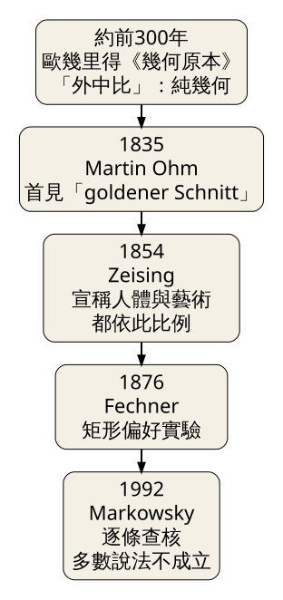
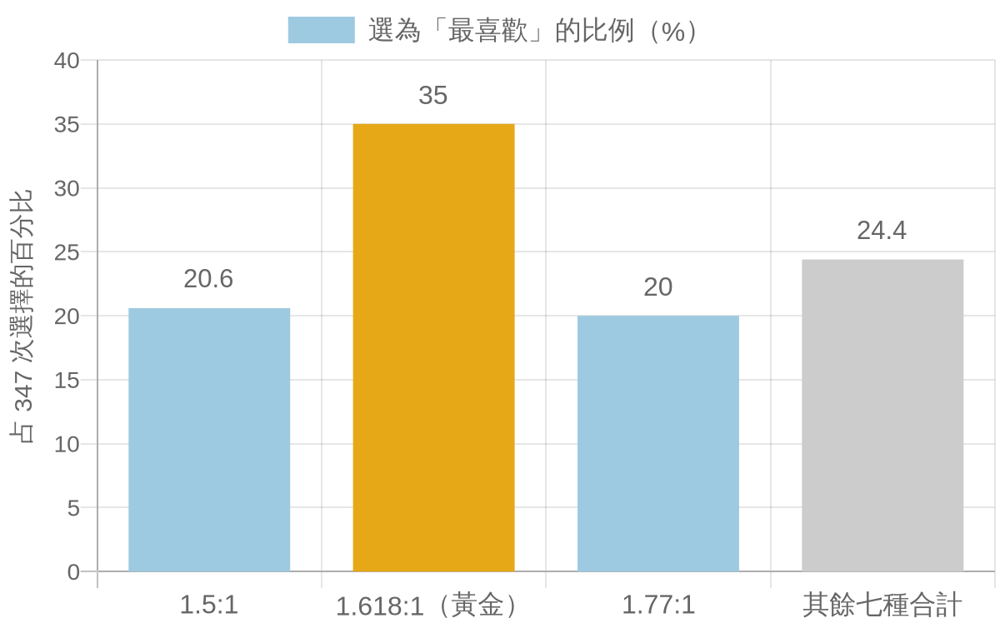
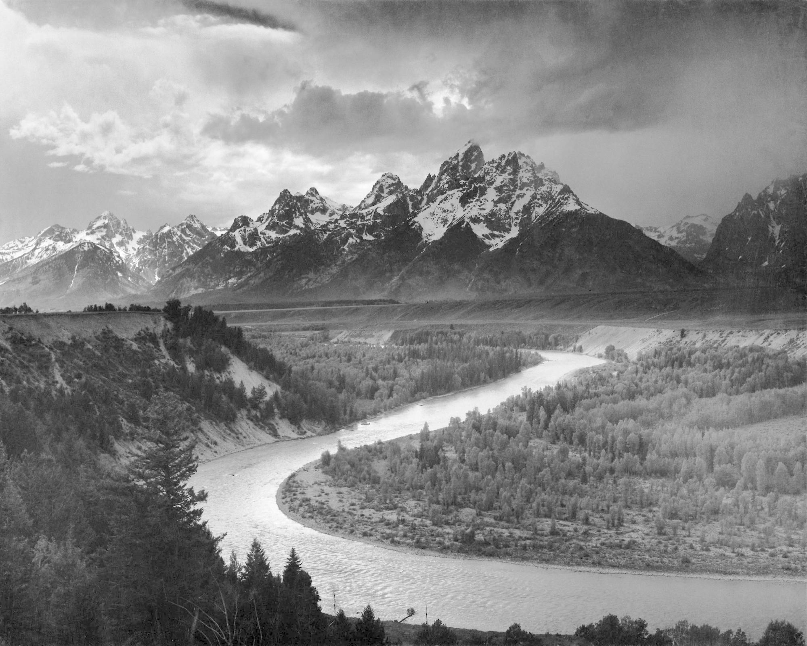
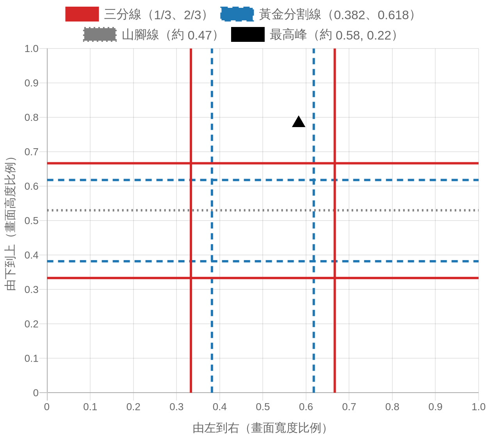
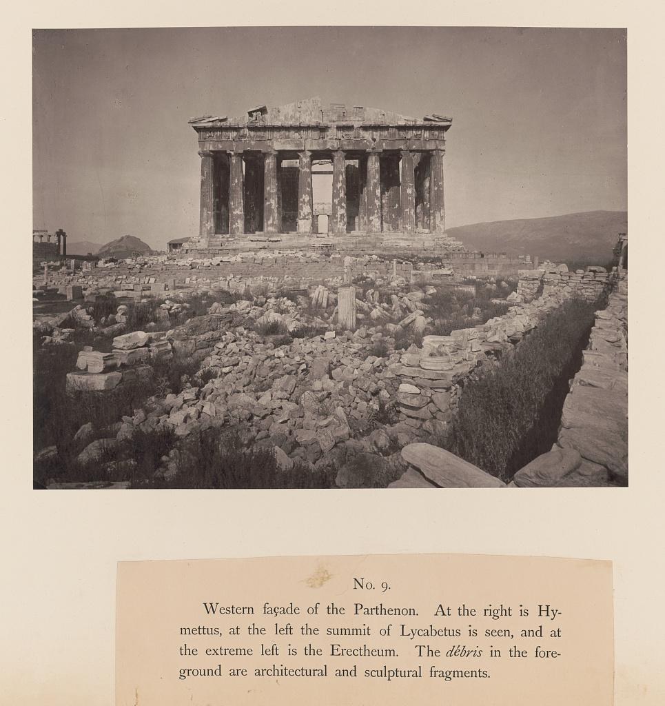

1.618 這個數字在數學上真實存在，但「古代建築都照它蓋」「人天生最愛黃金矩形」這兩句話，查到原始資料後大多站不住；今天學會用尺量、用數字檢查，不被一條螺旋線說服。
史料 1990 年前後，緬因大學（University of Maine）的電腦科學教授 George Markowsky 答應去學校的古典學社團演講，題目選了黃金比例。他照常收集了那些大家耳熟能詳的故事：金字塔、帕德嫩神廟、達文西、畫家的構圖。準備講稿時，他想把數字講精確一點，於是去查建築物的實際尺寸。結果讓他自己嚇一跳：量出來的數字跟書上的說法對不起來。這段經過是他在 2005 年替 Mario Livio《The Golden Ratio》寫書評時自述的，刊在《Notices of the American Mathematical Society》第 52 卷第 3 期。
他後來把查證結果寫成論文〈Misconceptions about the Golden Ratio〉，1992 年發表在《The College Mathematics Journal》第 23 卷第 1 期，第 2 至 19 頁。他在書評裡說，這篇論文逐條檢查了關於 phi 最常見的說法，也整理出這些說法在數學書籍與教科書中有多普遍。
要看懂他在檢查什麼，得先把黃金比例的履歷攤開（見圖 1）。

圖 1｜「黃金分割」從幾何定義到美學口號的時間線。來源：本課程依 Euclid《幾何原本》卷六定義 3、Green（1995）引 Fowler（1982）、Markowsky（1992；2005 書評自述）繪製。
經典理論 歐幾里得《幾何原本》（約西元前 300 年）卷六定義 3 寫的是「外中比」（extreme and mean ratio）：把一條線分成一長一短，使「全長比長段」等於「長段比短段」。依 David Joyce 的線上註解本，這個分法在卷二命題 11 已經出現，只是當時用矩形面積來表述。整段定義只談幾何，沒有一個字談美。
史料（依二手文獻） 「黃金」這個名字來得很晚。Christopher Green 在 1995 年的回顧論文中引用科學史家 David Fowler（1982）的考證：德文「goldne Schnitt」最早見於 Martin Ohm 1835 年的數學教科書，真正讓這個名字流行起來的，是 Adolf Zeising 1854 年起的著作。Zeising 在《Neue Lehre von den Proportionen des menschlichen Körpers》（1854）主張人體比例與藝術作品都遵循這個比例。「黃金比例＝美」這套說法的系統化，距今不到兩百年。
經典理論 黃金比例 φ ＝（1＋√5）／2 ≈ 1.618。它有幾個好看的性質：φ² ＝ φ＋1，1／φ ＝ φ－1 ≈ 0.618；費波那契數列（1、1、2、3、5、8、13⋯⋯）相鄰兩項的比會越來越接近 φ。這些是數學事實，沒有爭議。爭議在後面那一步：從「這個數字很特別」跳到「這個數字讓東西變美」。
實證研究 第一個用實驗回答這個問題的人是心理學家 Gustav Fechner。依 Green（1995）對原典的核對，Fechner 在 1876 年的《Vorschule der Aesthetik》報告了這樣的做法：把十張面積相同的白色矩形放在黑色桌面上，長寬比從 1:1（正方形）到 2.5:1，每位受試者來之前都重新打亂排列，請對方挑出最喜歡的一張。總共收到 347 次選擇，其中 35.0% 選了黃金矩形，左右兩個鄰居 1.5:1 與 1.77:1 各得約兩成（見圖 2）。最不受歡迎的是 2.5:1（40.9%）與正方形（31.9%），沒有人把黃金矩形選為最討厭的。

圖 2｜Fechner 1876 年矩形偏好實驗中「最喜歡」的選擇分布，共 347 次選擇。「其餘七種合計」為 100% 減去前三項所得。來源：本課程依 Green, C. D.（1995）, Perception 24, 937–968 所轉述之 Fechner（1876）數據繪製。
這張圖看起來很有利於黃金比例，但請注意兩件事。第一，1.5:1 到 1.77:1 這一整段加起來才是人們喜歡的區域，黃金矩形只是剛好落在中間。第二，Green 指出後世常把 Fechner 的結果講得更誇張，例如 Mahon 與 Battin-Mahon（1984）寫成「超過 75% 的人選同一種」，這個數字在原始資料裡找不到。
實證研究 之後一百多年，重做的結果時有時無。Chris McManus 在 1980 年的《British Journal of Psychology》（第 71 卷，505–524 頁）用兩兩比較法做了三組實驗。以團體平均來看，受試者偏好接近黃金比例的矩形，但高峰很寬，大約從 1.5:1 延伸到 2:1；拆開看個人資料，每個人的偏好差異很大。McManus 自己的結論是，Fechner 主張的現象有「moderately good evidence」（中等程度的證據）。
實證研究 Markowsky 則在多次演講現場拿一張印有 48 個不同比例矩形的圖請聽眾挑選。他在 2005 年的書評中寫道，最常被選中的比例是 1.83，黃金矩形被選的次數並沒有比較多，有時還更少。這是非正式的現場調查，不是控制嚴謹的實驗，證據力要打折。
Green 回顧 130 年的研究後，給的結論比兩邊陣營都保守：黃金比例似乎確實有一點心理效果，但這個效果很脆弱，研究方法稍微粗糙就測不出來。放在今天的課裡，可以這樣記：人對「略長於正方形、又不太狹長」的矩形有寬鬆的偏好，1.618 落在這個區間裡，它並沒有被證明是唯一的最佳解。
攝影圈最常見的黃金比例說法，是「黃金分割構圖」與「黃金螺旋構圖」。不少修圖軟體的裁切工具，除了三分法格線，還能切換成黃金分割格線或一條從角落捲進來的螺旋。教學文章常說：把主體放在螺旋的中心，畫面就會更和諧。
拿一張公有領域的經典照片來實際量量看。Ansel Adams 在 1942 年替美國國家公園管理局拍了〈The Tetons and the Snake River〉，原件典藏於美國國家檔案館（NAID 519904）（見圖 3）。蛇河從左下角的暗處以 S 形向右上方延伸，提頓山脈橫在畫面上半部，雲層壓在最上面。

圖 3｜Ansel Adams，〈The Tetons and the Snake River〉，1942，懷俄明州大提頓國家公園。來源：National Archives and Records Administration，Records of the National Park Service（79-AAG-1）。授權：Public domain（美國聯邦政府職務作品），來源頁面
本課程量測 我用 Wikimedia Commons 上 3000 × 2402 像素的掃描檔量了三個位置，數值是約略值，誤差大約 ±0.01：
把三分線（0.333、0.667）與黃金分割線（0.382、0.618）一起畫上去（見圖 4）。最高峰離最近的黃金分割線 0.618 差約 0.04，離三分線 0.667 差約 0.08；它的高度 0.22 則高過兩組橫線。山腳線幾乎落在中線上，兩套格線都沒對到。

圖 4｜把三分線與黃金分割線疊在同一個畫面座標上，並標出〈The Tetons and the Snake River〉兩個主要元素的位置。座標以畫面寬高為 1 標準化。來源：本課程依 Adams（1942）掃描檔自行量測繪製，量測為約略值。
這個結果帶出三個實際問題。
差距本來就很小。一張寬 6000 像素的手機照片，右三分線在第 4000 像素，右黃金分割線在第 3708 像素，相差 292 像素，大約是畫面寬度的 5%。手持拍照時手一晃、後製裁切時多切一點，主體位置就能移動這麼多。說一張照片「用的是黃金分割而不是三分法」，需要比 5% 更精確的證據，而拍攝者通常沒有留下這種紀錄。
螺旋可以隨意擺。一條黃金螺旋可以旋轉四個方向，再左右翻轉，一共八種擺法，再加上可以縮放與挪動，幾乎任何照片裡的弧線都能找到一種擺法「對上」。蛇河的 S 形就很容易被拿來套。Markowsky 在書評中也指出，任何長方形都能切出一個相似的小長方形加上一塊固定比例的餘料，一直切下去同樣會得到一串收斂到一點的長方形螺旋；黃金矩形只是其中一個特例。
容許誤差決定結論。Adams 的最高峰差 0.04 算不算「在黃金分割線上」？如果你事先願意接受 ±0.05 的誤差，畫面裡大概會有一半的東西落在某條線上。Markowsky 對建築的批評也是這一點：只要不先講好量哪裡、允許多少誤差，數字幾乎都能湊出來。
Adams 這張照片的力量，來自暗部到亮部的大跨度、河流把視線一路帶向山峰，以及雲層壓低的天空。這些都可以用前幾堂的視線動線與視覺重量來說明，用不到 1.618。
史料 帕德嫩神廟是黃金比例傳說中出現最多次的建築。Markowsky 在 2005 年的書評中列出他採用的尺寸：長 228 英尺 1/8 英寸、寬 101 英尺 3.75 英寸、高 45 英尺 1 英寸。長除以寬、寬除以高，兩個比值都約為 2.25，也就是 9/4，離 1.618 很遠。他也說，自己沒有找到任何可信證據顯示希臘建築師或藝術家在任何作品中刻意使用 phi。

圖 5｜William James Stillman 拍攝的帕德嫩神廟西立面，收錄於《The Acropolis of Athens, illustrated picturesquely and architecturally in photography》（London: F. S. Ellis, 1870）第 9 圖版。來源：Library of Congress Prints and Photographs Division。授權：Public domain（館方標示 No known restrictions on publication），來源頁面
看 Stillman 1870 年拍的西立面（見圖 5），你會發現想在上面畫黃金矩形，得先決定很多事：從台基最底層量還是從柱底量？屋頂要算到殘存的山牆尖端，還是算到簷口？立面的寬度要不要包含轉角柱的外緣？每換一種量法，比值就跟著變。坊間的黃金矩形示意圖常常就是在這些選擇上「調整」到剛好 1.618。
Livio 在《The Golden Ratio》（2002）中對帕德嫩的態度是「很難確定」，理由是畢達哥拉斯學派在神廟興建之前已累積相當的相關知識。Markowsky 在書評中直接反駁：要談有沒有用，得先有理由相信它被用過，而相關的數學知識存在，並不等於建築師用了它。
日常空間裡其實有一個更好用的比例例子。Markowsky 提到，2 × √2 的長方形對半切開，會得到兩個和原來形狀相同的小長方形；這正是 A4、A3 紙的設計原理（210 × 297 毫米，比值約 1.414）。A4 對折變 A5，形狀不變，影印縮放時才不會留白邊。這個比例被採用，理由是功能，跟美感傳說無關。
誤解一：「古希臘人用黃金比例蓋帕德嫩神廟。」屬於已被反駁的說法。依 Markowsky（1992；2005 書評）的量測，主要比值約為 2.25；「黃金分割」一詞要到 1835 年才出現，帕德嫩完工於西元前五世紀。支持者若要主張，須拿出當時的設計文獻或事先講明的量測規則。
誤解二：「實驗已證明人最喜歡黃金矩形。」Fechner 1876 年的結果確實偏向黃金矩形，但後續重做結果不一。McManus（1980）發現團體偏好的高峰很寬、個人差異很大；Markowsky 的現場調查最常被選的是 1.83。Green（1995）的結論是效果存在但脆弱。所以比較準確的說法是「人對中等長寬比的矩形有寬鬆的偏好」。
誤解三：「黃金螺旋是三分法的升級版，照著擺就會更好看。」兩套格線在畫面上只差約 5% 的寬度，螺旋又有八種擺法可以任意選。把螺旋疊在名作上「找到吻合」，通常是先有結論再擺線。拿它當拍攝時提醒自己「主體別放正中央」的工具可以，當成美的公式就說過頭了。
誤解四：「費波那契數列出現的地方，就是黃金比例在起作用。」Markowsky 在書評中指出，任選兩個正整數、每一項等於前兩項之和，比值都會收斂到 φ；更廣泛的線性遞迴數列也都會收斂到各自的固定比值。數列本身可以完全不提 φ 就拿來用。
看（5 分鐘） 在家裡或辦公室找五個長方形：手機螢幕、一本書的封面、A4 紙、門、窗戶、相框都可以。先不要量，用眼睛排出「最長」到「最接近正方形」的順序，再猜哪一個最接近 1.618。
做（10 分鐘）
回顧（5 分鐘）
原典與書目（本次未能開啟全文，內容依下表中的論文與書評轉述）
實際開啟查核的來源
來源 | 類型 | 查核日期 |
實證研究（文獻回顧） | 2026-11-12 | |
Markowsky, G. 2005. Book review: The Golden Ratio. Notices of the AMS 52(3): 344–347（原刊頁面 PDF 副本） | 經典理論／史料（作者自述） | 2026-11-12 |
Euclid's Elements, Book VI, Definition 3（David E. Joyce 註解本，Clark University） | 經典理論 | 2026-11-12 |
Wikimedia Commons：Adams The Tetons and the Snake River.jpg（授權：Public domain，NARA 519904） | 史料（圖 3 授權頁） | 2026-11-12 |
史料（圖 5 授權頁） | 2026-11-12 |
延伸閱讀 想看黃金比例研究的完整來龍去脈，Green（1995）的回顧論文最好讀，作者網站可免費下載。想看支持與反對雙方的爭論，可對照 Livio（2002）與 Markowsky（2005）的書評一起讀。